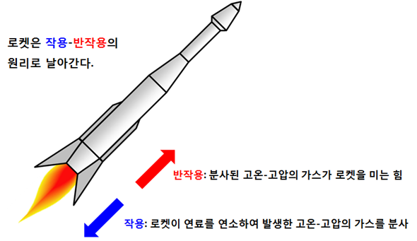
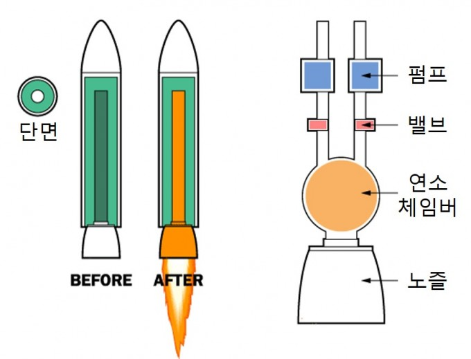

1106김현진
보고서 작성용
1. 과학이론 -작용과 반작용을 이용한 로켓발사 2.선택한 이유 -누리호를 보고 로켓에 관심을 가지는 계기가 되었고 로켓을 직접 만들기 위해 이론을 먼저 알아야했습니다. 그리고 제 진로가 소프트웨어와 연관을 짓기 위해 아두이노를 이용하여 로켓을 제어하는 코드를 만들고 보고서를 웹사이트로 만드는 계획을 세웠습니다. 3.이론적 배경 -작용과 반작용을 쉽게 설명하자면 작용과 반작용은 물체 A가 물체 B에게 힘을 주면 물체 B도 물체 A에게 똑같은 힘을 주게 되는데, 서로에게 가하는 힘의 방향은 힘을 가한 방향의 반대라는 것을 말합니다. (자료:https://www.scienceall.com/%EC%9B%90%EB%A6%AC -%E2%91%A0-%EB%A1%9C%EC%BC%93-%EB%B0%9C%EC%82%AC-%EC%9B%90% EB%A6%AC-%EC%96%B4%EB%A0%B5%EC%A7%80-%EC%95%8A%EC%95%84%EC%9A%94/) 그리고 제2의 법칙인 가속도의 법칙으로 같은 힘을 가할때 질량이 작을수록 움직임이 더 크게 나타난다. 이 원리들로 로켓을 발사하는 것입니다. 연소실에서 일어난 작용이 노즐로 나오는 압력으로 반작용이 일어납니다.  출처: https://www.google.com/url?sa=i&url=https%3A%2F%2Fb runch.co.kr%2F%40homoscience%2F13&psig=AOvVaw1lZSIoPGPP 3ftyMEvL3ZTe&ust=1635898532361000&source=images&cd=vfe&ve d=0CAsQjRxqFwoTCICb2Ymz-PMCFQAAAAAdAAAAABAD 이러한 로켓들도 종류가 두 가지가 있습니다. 한 가지는 액체엔진을 사용한 로켓이고 다른 한 가지는 고체엔진을 사용한 로켓입니다 먼저 액체엔진의 장점은 발사되고 정지궤도에 안착하고 싶을 때 마음대로 엔진을 끌 수 있는 점과 고체엔진의 비해서 화력이 월등하게 좋습니다, 하지만 액체엔진에는 그 만큼 많은 기술과 자본, 시간이 고체엔진보다 훨씬 든다는 점이 제일 단점인 것 같습니다. 고체엔진의 장점은 몸체에 다른 기관 없이 고체연료만 집어 넣을 수 있는 연료탱크만 있으면 충분히 잘 날아갈 수 있고 기술과 자본, 시간이 적게 드는 엔진입니다. 단점으론 멈출 수 없다는 게 제일 단점입니다, 궤도에 안착해도 엔진이 계속 점화되면 궤도가 바뀔 수 있기 때문입니다. 작용과 반작용을 쉽게 알아볼 수 있는 엔진은 고체엔진으로 한 눈에 봐도 아주 잘 알 수 있습니다.  왼쪽은 고체엔진, 오른쪽은 액체엔진입니다. 출처: https://www.google.com/url? sa=i&url=https%3A%2F%2Fm.dongascience.com% 2Fnews.php%3Fidx%3D25370&psig=AOvVaw0lBIymX7wlmffXL3vcYt7r&ust= 1635903561629000&source=images&cd= vfe&ved=0CAsQjRxqFwoTCIjY4OfF-PMCFQAAAAAdAAAAABAD 이제 아두이노를 이용하여 엔진의 방향을 조절하는 코드와 기압측정기로 고도를 측정하여 제일 높은 고도에서 낙하산을 펼치는 코드를 짜보겠습니다. 먼저 로켓을 안정적으로 올라가기 위해 로켓엔진의 방향을 움직이는 코드, 즉 자세제어장치를 만들어야합니다, 영어로는 Thrust Vector Control이라고 줄여서 TVC라고 부릅니다. TVC가 로켓에 대표적으로 쓰이는 곳은 space X로 자세제어장치로 역추진착륙을 하는 것으로 대중들에게 많이 알려져 있습니다. 코드를 짜는데 "Park Lab"분에게 영상으로 도움을 받았습니다. 1.아두이노 실행 -아두이노를 실행합니다.